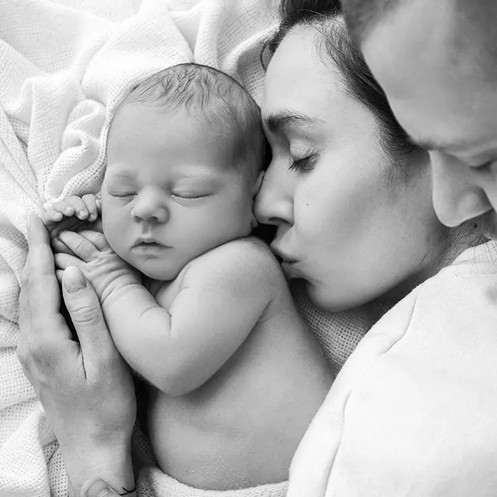
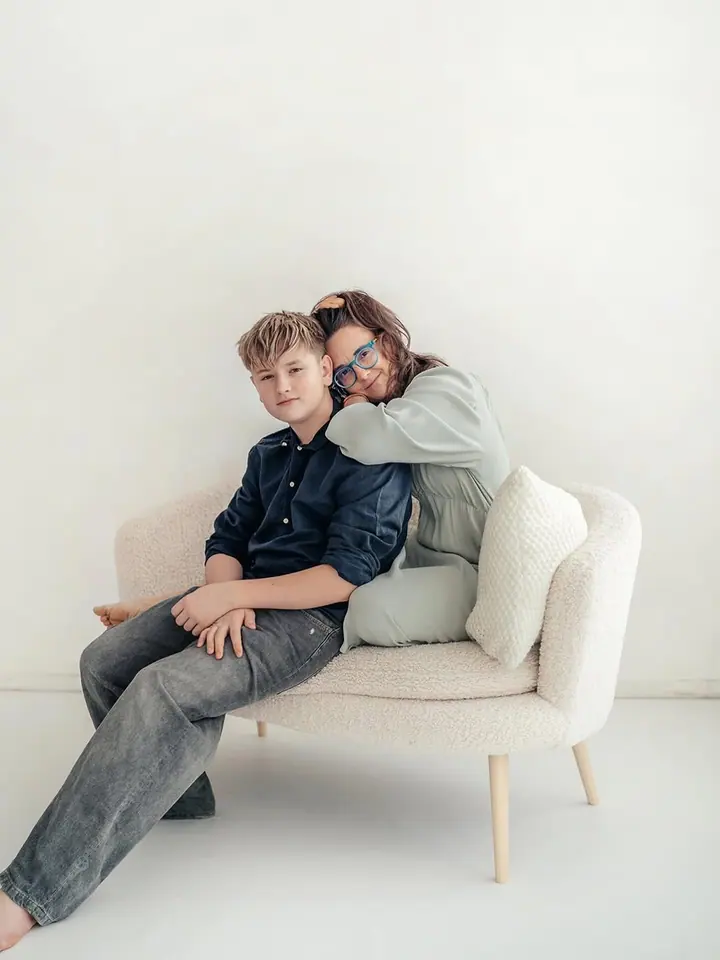
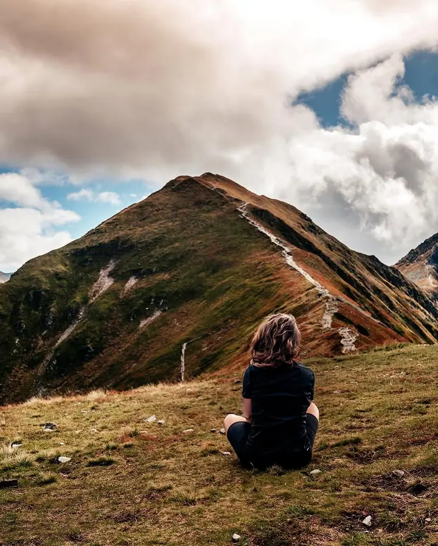
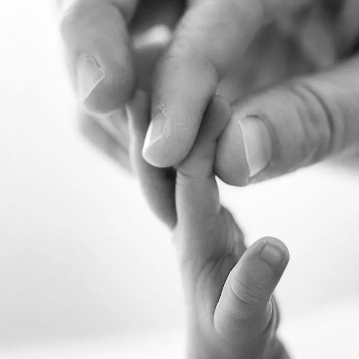
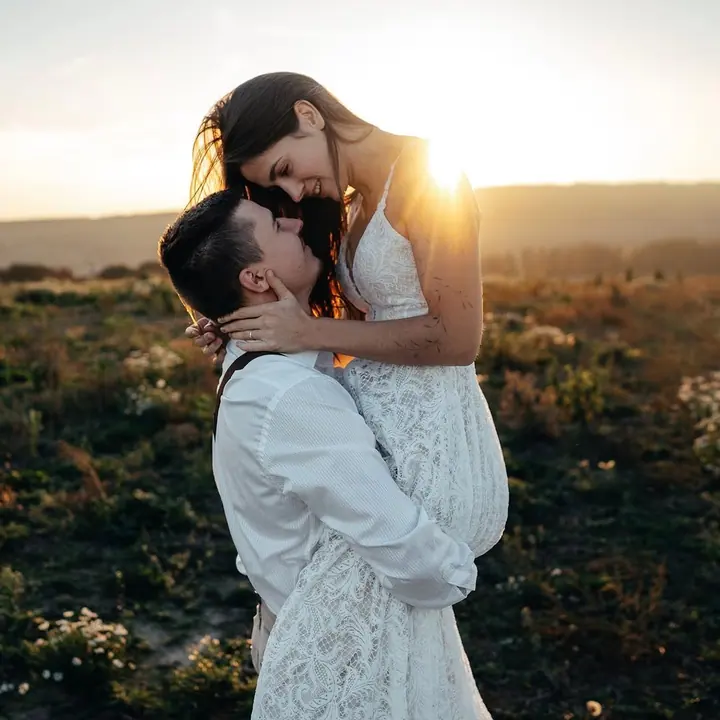

Newborn focení
Chmýří na tvářičkách, drobné prstíky a první dny doma. Miminka fotím do deseti, nejpozději čtrnácti dnů po porodu, kdy nejvíc spí. Fotím i předčasně narozená miminka.




Jmenuji se Silvie Valoušková a v Otrokovicích fotím těhotenství, novorozená miminka a celé rodiny. Líbí se mi snímky, které nejsou o pózách, ale o emocích a detailech. Nejraději fotím černobíle, protože barvy mě neodlákají od toho podstatného.
Více o mně
„Ale i já fotím barevně, nicméně černobílá jsem já.“
— Silvie Valoušková
Chmýří na tvářičkách, drobné prstíky a první dny doma. Miminka fotím do deseti, nejpozději čtrnácti dnů po porodu, kdy nejvíc spí. Fotím i předčasně narozená miminka.
Nezáleží mi na tom, jestli se díváte do objektivu. Chci zachytit chemii a lásku, která mezi vámi funguje, v ateliéru, venku nebo u vás doma.
Svatební den fotím s důrazem na emoce a detaily, ne na strojené pózy. Ráda pak vaši rodinu provázím i dalšími životními etapami.
Užijte si focení tohoto výjimečného období sama, nebo s sebou vezměte partnera a děti. Nejvhodnější doba je konec sedmého nebo začátek osmého měsíce, fotit můžeme v interiéru i venku.
Vím, že si chcete zapamatovat každičký okamžik prvních dnů s miminkem. Jak spalo, chmýří na jeho tvářích, vůni jeho vlásků. Jenže vzpomínky v těch mlhavých dnech s minimem spánku prostě nestačí. Proto jsem se stala fotografkou.
Můj první foťák mi koupil brácha, když jsem byla na střední. Byla to klasická zrcadlovka na film a strejda mi daroval vše potřebné k vyvolávání. Z koupelny jsme udělali fotokomoru a tam začal můj příběh s fotkou. Začínala jsem portréty a akty žen, spojovala focení s cestováním. Když přišli moji dva kluci, zamilovala jsem si dětskou a rodinnou fotografii a chci u ní zůstat.
Jsem spíš introvert, ráda cestuji a hledám dobré jídlo. Náš mladší syn Matouš se narodil ve 29. týdnu, a proto pomáhám s projektem NEO Cup, fotbalovým turnajem na podporu neonatologického oddělení ve Zlíně. Vím, jaké to je, když se miminko narodí příliš brzy.
Nejlépe e-mailem a s co nejvíce informacemi. Většinou každý večer vyřizuji poštu a obratem vám pošlu pár termínů na výběr.
Fotit můžeme v ateliéru, venku v přírodě nebo u vás doma. Záleží na tom, kde se budete cítit nejlépe.
Nemusíte se dívat do objektivu ani pózovat. S dětmi z focení udělám hru a soustředím se na to, co mezi vámi opravdu je.
Vybrané fotky vám předám v elektronické podobě a tištěné fotografie ráda osobně.
Vždy podle toho, jak se cítíte. Vhodnou dobou je konec sedmého a začátek osmého měsíce. Fotit můžeme v interiéru i venku.
Newborn focení je potřeba naplánovat do deseti, nejpozději čtrnácti dnů po porodu. V tomto období miminka nejvíc spí a focení je pohodovější pro všechny.
Prosím spíš e-mailem nebo SMS. Přes den často fotím a telefon nezvedám, abych nerušila focení. Na e-maily odpovídám navečer, nejpozději do dvou pracovních dnů.
Fotím i barevně. Černobílá fotka je ale pro mě o emocích a vyjádření, a proto ji mám nejradši.
v.silvie@seznam.cz
Otrokovice